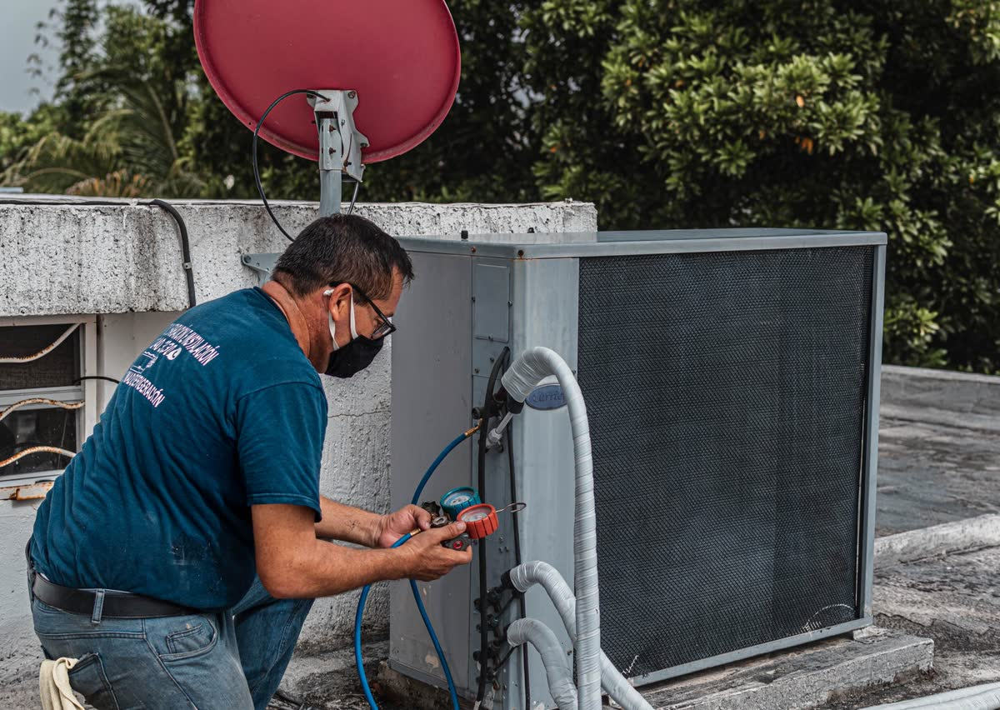
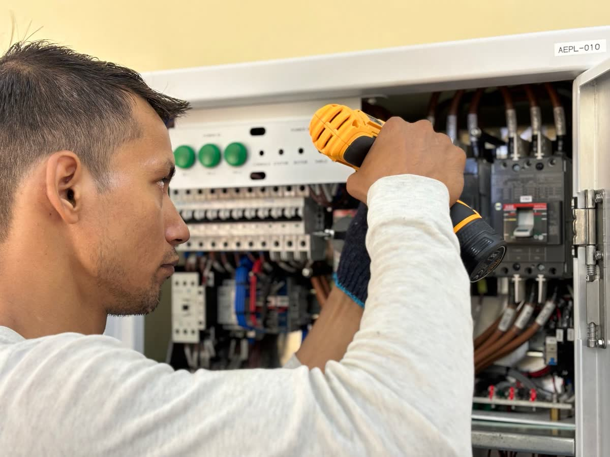
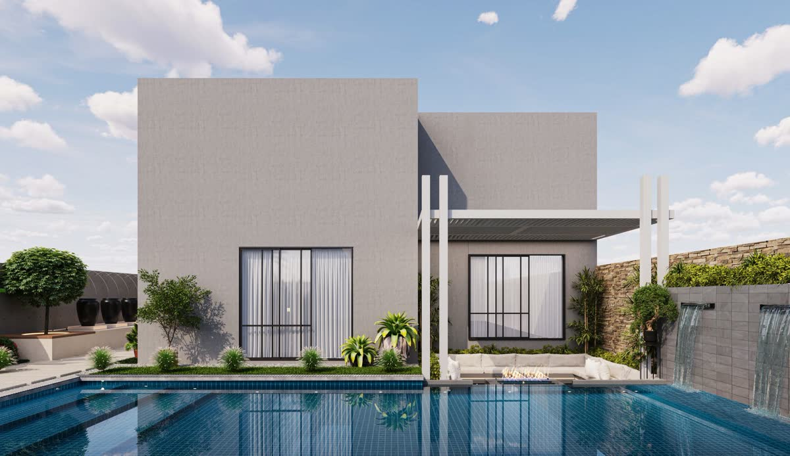
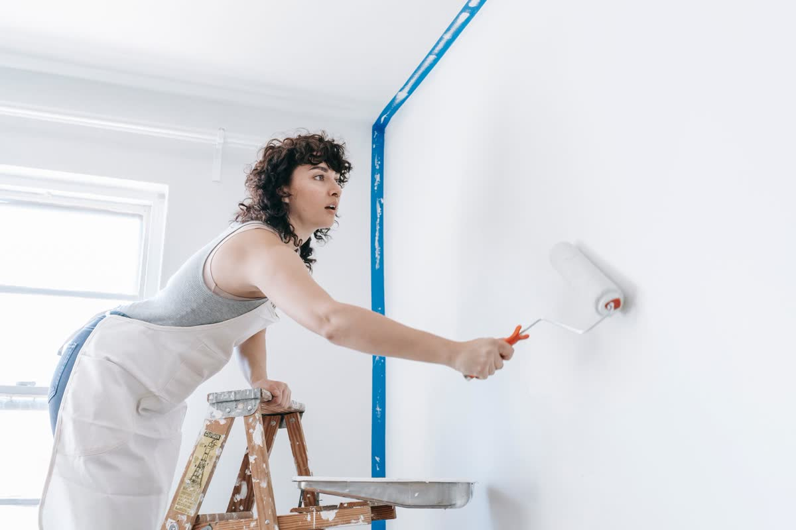
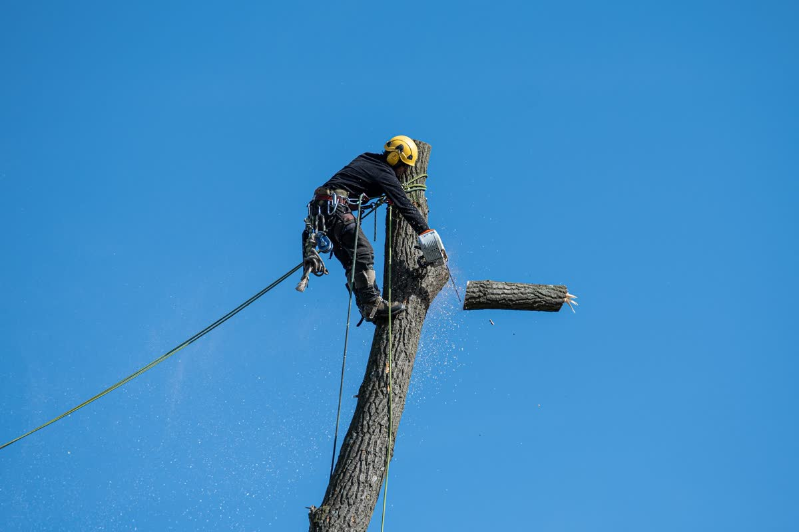
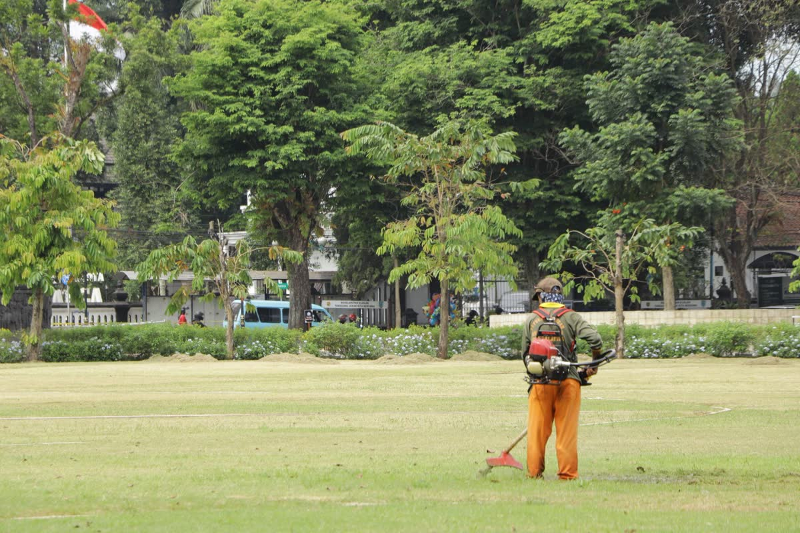

01
Punto Service
Refrigeración, aire acondicionado, electricidad y electrónica
- Refrigeración
- Aire acondicionado
- Electricidad
- Electrónica


Tres unidades·un WhatsApp
Dos Alas reúne tres unidades que atienden en un mismo WhatsApp: Punto Service para refrigeración, aire acondicionado, electricidad y electrónica; AB Construcciones para mantenimiento, pintura, piscinas, refacciones y construcción; y Espacios Verdes para parques y poda en altura.
Plano de consulta
Tocá los puntos de la casa y del parque: te decimos qué unidad lo resuelve y qué conviene mandar. Podés marcar varios y enviar una sola consulta por WhatsApp.
Dibujo de referencia. Si tu caso no aparece, contalo igual en la consulta.
Tres unidades · un mismo número
01
Refrigeración, aire acondicionado, electricidad y electrónica


02
Mantenimiento en general, pintura, piscinas, refacciones y construcciones




Fotos ilustrativas de Pexels: se reemplazan por trabajos propios de Dos Alas.
Sí. Las tres unidades atienden en el mismo WhatsApp: marcá en el plano todo lo que necesitás y mandá una sola consulta.
Escribinos tu localidad junto con la consulta y te confirmamos si llegamos.
Depende del trabajo. Con fotos, medidas o un video corto del problema te respondemos por WhatsApp con los pasos y el presupuesto.
Sí, la construcción de piscinas está a cargo de AB Construcciones, que también hace refacciones, pintura, mantenimiento y construcciones.
WhatsApp de Dos Alas para Punto Service, AB Construcciones y Espacios Verdes.